Final · Capstone
Electricity Generating Leg Brace
A wearable that harvests mechanical energy from walking and converts it to electrical power.
Executive summary
My final project is a wearable walking device that harvests mechanical energy from leg motion and converts it to electrical energy. I built it using a stepper motor as generator, two full-bridge rectifiers, smoothing capacitors, a pulley reduction system (≈ 5.8:1), and a 3D-printed calf-mount combined with laser-cut acrylic plates. The core idea is to create a robust, repeatable prototype that demonstrates human motion energy harvesting and points toward future, more efficient energy-harvesting and storage systems (buck-boost, supercaps, battery + charger).


Motivation: I'm really into environmental preservation and wanted to explore practical ways people could generate small amounts of electricity while doing everyday activities. The idea: capture otherwise wasted mechanical energy while walking and convert it to useful electrical power.
Contents
Demo
Materials
Below is the materials table describing items I used. Quantities and approximate specs included.
| Item | Qty | Spec / Notes | Purpose | Example / Local source |
|---|---|---|---|---|
| Stepper motor (used as generator) | 1 | NEMA 17 | Rotational generator element (coils produce AC when spun) | Lab |
| Laser cut acrylic plates (8" x 3") | 2 | 3 mm acrylic; front plate with motor holes | Chassis & motor mount | Laser cutter (Lab) |
| 3D printed pulleys | 2 | Small: 17T; Large: 100T (teeth counts used) | Gear ratio increase | Printed in PLA |
| M4 set screws | 4 | Metric M4, used to lock pulley to shaft | Mechanical fastening of pulleys | Lab |
| Bolts, washers, nuts | Various | Assorted sizes (M4, M6) with many washers for spacing | Axle, mounting, spacing | Lab |
| Full bridge rectifiers | 2 | Single package bridge | Convert coil AC to DC (one bridge per coil set) | Lab |
| Capacitors | 2 | 100 µF electrolytic | Smoothing the rectified DC | Lab |
| Buck boost converter / USB charging board (ended up not needing it) | 1–2 | Input range must match generator + storage; ≥3V input (didn't match my project) | Regulate to 5V for USB output / phone charging | Amazon |
| Electro cookie protoboard | 1 | Striped protoboard I used (solderable) | Solder permanent circuit vs. breadboard | Lab |
| Velcro (12 ft) | 1 roll | 12 ft total; heavy duty | Strapping the assembly to calf | Michael's (biking trip!) |
| Hot glue, silicone padding | Various | Comfort pads and temporary fixes | Comfort and temporary anti slip | Lab |
| LEDs (demo) | 18 | Standard low current LEDs | Quick demonstration of power generation | Lab |
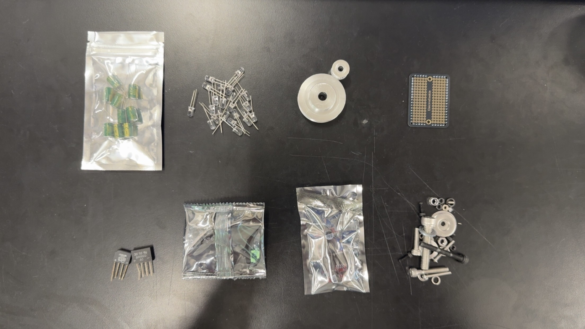
Tools and machine settings
| Tool | Typical settings / notes |
|---|---|
| Laser cutter | Acrylic 3mm: test on scrap; ensure ventilation; engrave text on one side (I added "Kamrons generator"). |
| 3D printer | 20–30% infill, supports for overhangs; my calf mount took ~10 hours to print. |
| Drill / hand tools | Drill out fitment holes when tight; countersink if needed. |
| Soldering iron | Basic solder in the lab, heat shrink tubing for safety on exposed wire. |
| Multimeter | Measure AC on motor coils, DC post rectifier, and under load to log performance. |
Design files and CAD notes
All mechanical parts were designed in Fusion 360. File naming I used (example):
plate_front.dxf — laser front plate with motor cutouts and bolt holes
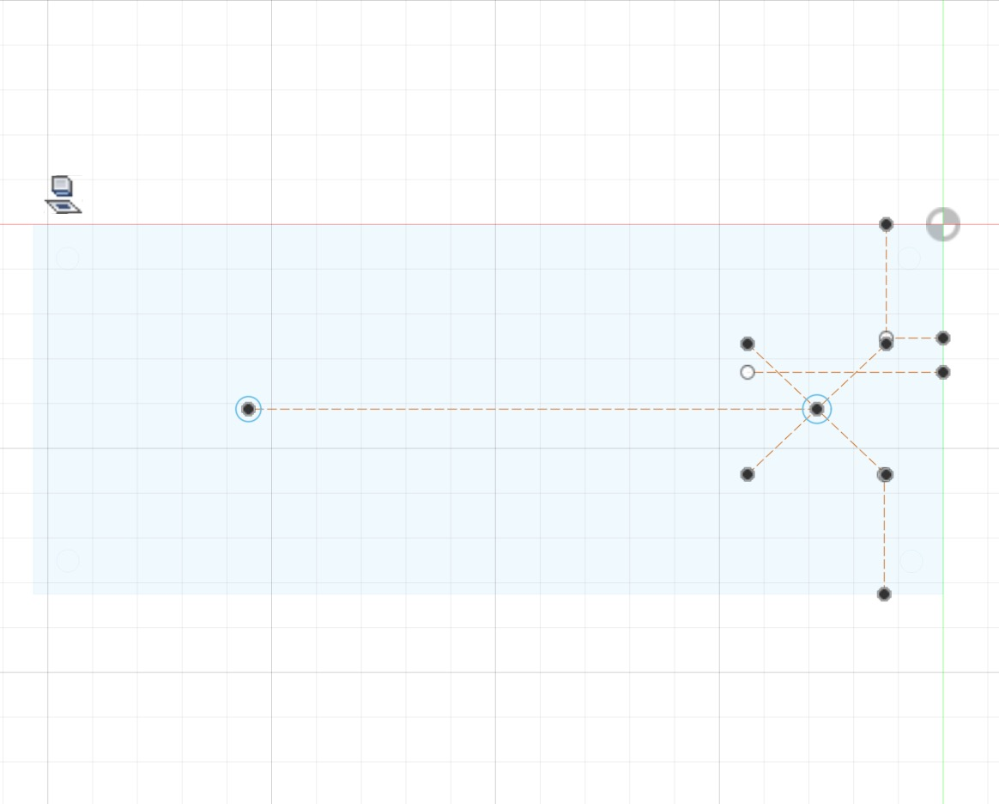
plate_back.dxf — back plate plain (or with mounting holes)
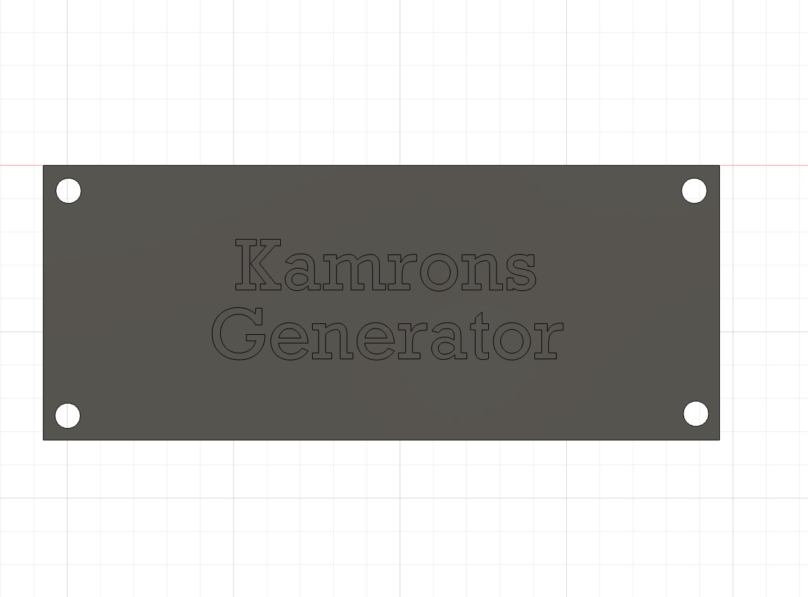
pulley_17T.stl — small motor-mounted pulley (17 teeth)
pulley_100T.stl — large calf-mounted pulley (100 teeth)
calf_mount.stl — 3D printed calf cradle
Fabrication and build steps
- Prepare the CAD: export
plate_front.dxfandplate_back.dxf. The front plate includes precise motor mount holes, pulley clearance, and four corner holes for bushings/bolts. On the back plate I added the engraved label: "Kamrons generator". - Material: choose acrylic 3 mm. Place material on laser bed (face you want engraved facing up).
- Laser settings: run a small test cut; then cut the plates. Collect the plates and remove protective film.
- Initial fit: I found fitment issues (holes slightly too tight). I carefully reamed/drilled out motor holes to achieve a smooth fit.
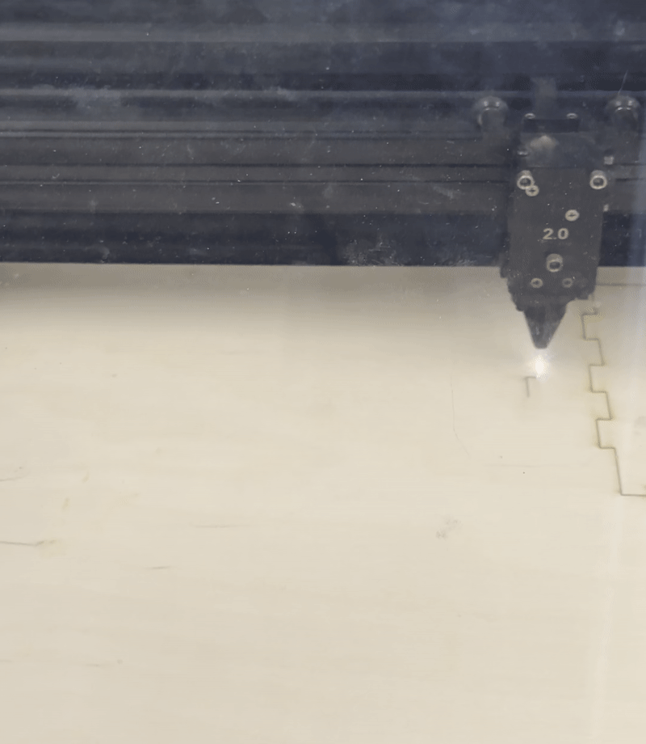
- Design: I modeled both pulleys in Fusion 360 to achieve the target ratio. The small pulley is
17T(motor shaft), the large is100T(calf axle). This yields a gear ratio of approximately 100 / 17 = 5.9 → ≈ 5.9:1 (≈ 6:1). - Export STLs for the pulleys and calf mount. Double check shaft dimensions, measure motor shaft and match the pulley to that.
- Print settings: 15–30% infill, supports as required. The calf mount printed for about 10 hours in my setup.
- Print failure handling: my first calf mount print failed (post print I tuned printer settings with Jessica and reprinted).
- After successful print, remove supports, sand mating surfaces lightly so it fits the leg comfortably.
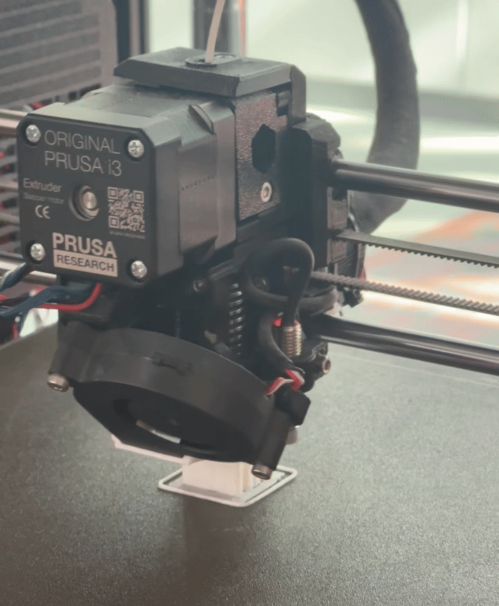
- Mounting small pulley to motor:
- Slide the 17T pulley onto the motor shaft. Use M4 set screws to lock it in place.
- Tighten set screws gently while holding the shaft so the pulley doesn't shift.
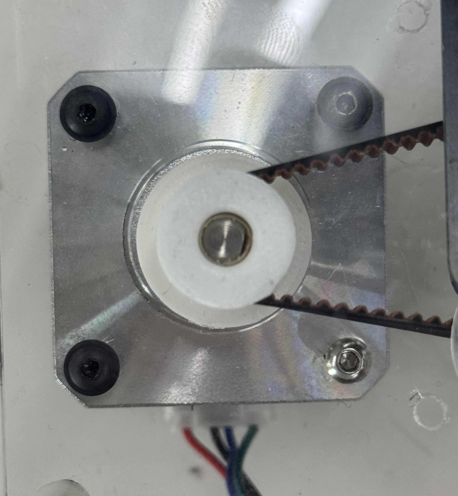
- Mounting big pulley and calf mount:
- I used a bolt as the calf-axle. The big pulley (100T) is placed on that bolt and secured with washers on both sides to establish spacing.
- To attach the printed calf mount to that bolt I ran a bolt through the calf mount (washer above), then through the front acrylic, then through the other plate, and finally secured with a nut, stacking many washers as spacers to make the parts rotate freely while staying aligned.
- Note: I used many washers because I didn't have a shaft collar or keyed fitting; it's a temporary shim approach to maintain spacing. In my next iteration I will consider a keyed shaft, a proper bearing, or a printed clamp to avoid excessive washers.
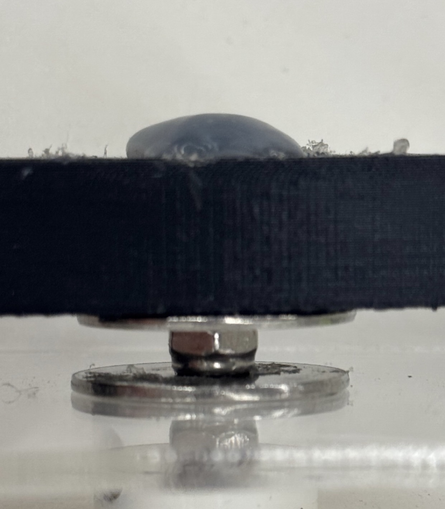
- After assembly, test rotation by hand. Make small adjustments (loosen/tighten washers, etc.) until the belt path runs and spin is smooth.
- If the calf mount slipped on the bolt while walking (it did), I temporarily fixed it with hot glue. This is a band aid, see Improvements section for a permanent fix (shaft collar, keyed hub, or dedicated clamp).
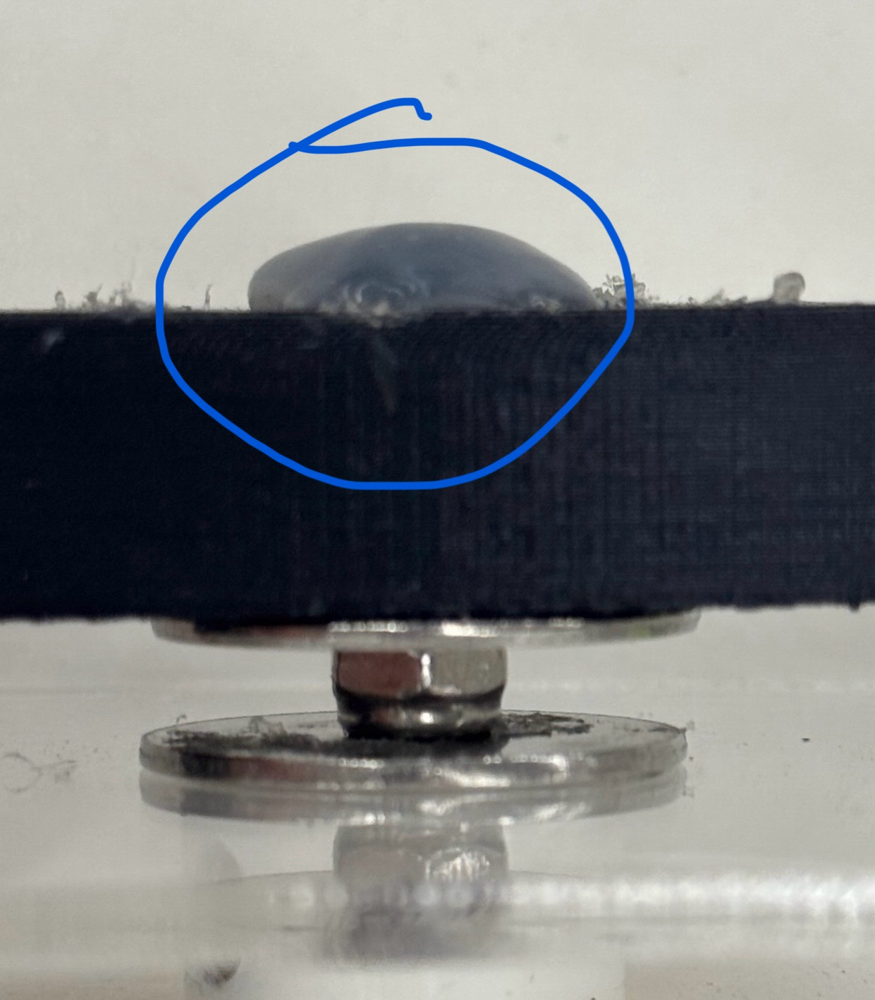
- Install the belt around the pulleys and adjust center to center distance between pulleys so the belt tension is moderate, not too tight to bind the motor/axle, not too loose that it slips.
- Verify gear ratio by rotating the calf pulley one revolution and recording motor pulley revolutions (or using teeth counts: 100 / 17 ≈ 5.88 motor revolutions per calf revolution).
- Spin test: rotate calf pulley slowly and check motor shaft; connect multimeter and verify AC voltage on coil wires (see wiring section).
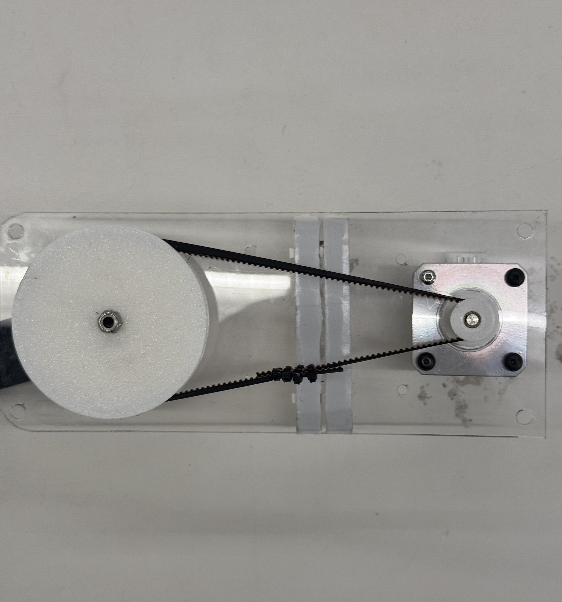
Wiring and circuit documentation
Below I document how I wired the stepper coils to the rectifiers and smoothing caps, plus the key problems I ran into and how I tested.
Overview of the approach I used
- Stepper motor has multiple coils which produce AC when spun. I used two full-bridge rectifiers, one per coil set, to produce DC from each coil set.
- Each rectifier's DC output is smoothed with a 100 µF electrolytic capacitor (rated above expected voltage).
- I initially tested by lighting LEDs directly from the rectified/smoothed output to demonstrate power (LEDs flashed very bright).
- Later I attempted to drive a buck-boost converter / USB charging board but discovered that my generator produced voltages that sometimes fell below the converter's minimum input (3 V), which produced unstable boosting and risked over-voltage spikes.
Typical connection (conceptual)
Motor coil A (2 wires) ----> Full bridge rectifier A ----> +DC (smoothing cap 100µF) ----> common DC rail (to load) Motor coil B (2 wires) ----> Full bridge rectifier B ----> +DC (smoothing cap 100µF) ----> common DC rail (to load)

How I soldered it
- Soldered each coil pair to its own bridge rectifier (AC inputs). Confirm polarity and continuity on the bridge before hooking to capacitors.
- On each rectifier I connected a 100 µF electrolytic capacitors between + and - (observe polarity!).
- I used an LED (and resistor as needed) to prove there was DC output. The LEDs lit brightly when walking.
- I later moved from a breadboard to a soldered protoboard ("electro cookie") to make the connections robust. This reduced intermittent contact and improved test reliability.

Suggested wiring improvements (electrical design)
- Energy buffer: add a supercapacitor or small battery pack (with proper charge controller) so the buck boost sees a relatively steady input and doesn't need to try to boost from sub 3 V on startup.
- Protection: add TVS diodes or a zener clamp on the buck boost input to protect downstream electronics from voltage spikes.
Simple wiring checklist (before applying power)
- Verify rectifier polarity: AC pins go to coils, + and - are DC outputs.
- Confirm capacitor polarity.
- Use multimeter on diode check to make sure there's no shorted diodes on the bridge.
- With manual spin, confirm DC voltage exists at DC output (no load), then add test load and measure again.
Testing and measurement
Here are the steps I used to test the power generation.
Test procedure
- Set multimeter to AC to measure between each coil pair with Bobby while manually spinning the motor to confirm AC generation.
- Switch multimeter to DC after the rectifier and filter capacitor to measure flat DC voltage (no-load).
- Hook up LED(s) or a known resistor load and measure voltage under load.
- Record the difference between no load and load voltages, and compute open circuit vs loaded power if you have current measurements.
Measurement log
| Test label | Condition | No-load VDC (V) | Loaded VDC (V) | Load (Ω or device) | Notes |
|---|---|---|---|---|---|
| Coil A — walking | Walking @ slow pace | 4.8 | 3.9 | 18 LEDs (≈ bright) | Very bright output, consistent over multiple steps |
| Coil B — hand spin | Manual spin | 6.1 | 5.0 | 18 LEDs | Peak voltage on fast spin, LEDs near max brightness |
Final assembly, finishing and comfort
- Once the pulley, motor, and calf mount were working I glued the electronic protoboard between the two acrylic plates so the center looked clean and the electronics had protection from the outside.
- I used silicone padding where the assembly contacts the calf for comfort, thin soft silicone pad glued to the printed mount made walking and wearing comfortable for demo.

- For the strap system I added two bolts through the acrylic to anchor the velcro. Then I looped the velcro through my prebuilt velcro holders I made in fusion on the calf mount so the brace straps tightly to the leg.
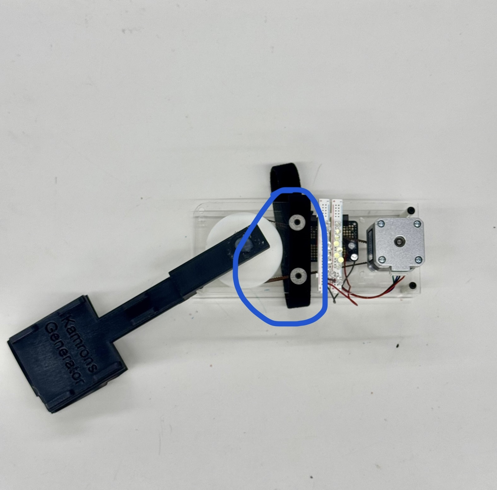
- Once everything was verified I closed the second acrylic plate and secured it with nuts. I tested the assembly by walking around the lab slowly and checking the generator output and mechanical stability.
Safety notes and PPE
- Wear eye protection when using laser cutters, drills, and when sanding 3D prints.
- Observe polarity on electrolytic capacitors because reverse connection can cause explosion.
- When soldering, work in a ventilated area.
- Hot glue and silicone can bond skin.
- Do not connect a phone or other expensive electronics directly to the generator without proper charging circuitry and surge protection.
Lessons learned, known issues and improvements
Problems I ran into
- Fitment issues on laser cut plate holes, I fixed this by drilling carefully.
- Failed 3D print (calf mount), re-tuned printer with Bobby, reprinted.
- Calf mount slipping on bolt: I used hot glue as a temporary fix, but this is not ideal.
- Buck boost converter minimum input (≈3 V) problem: my generator sometimes produces < 3 V, causing the converter to malfunction and spike in voltage. I therefore used the generator to drive LEDs for demo rather than charging a phone directly. I couldn't get a proper gear ratio after failed NEMA 17 gearbox prints and it was out of my budget online.

Short term improvements (easy)
- Add a shaft collar or keyed hub to secure the calf mount to the axle (no hot glue or washers).
- Replace stacked washers with properly sized spacers or printed bushings for better alignment.
- Use Schottky diodes to OR-join rectified outputs instead of directly paralleling outputs.
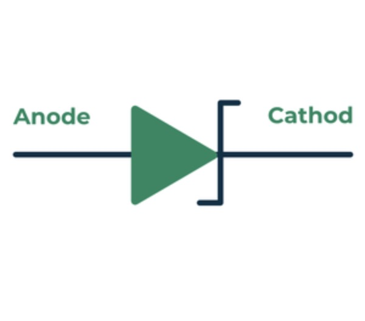
Medium / long-term upgrades
- Add an energy buffer (supercapacitor or small Lithium ion cell + charge controller) to provide a steady input to the buck boost converter.
- Design a custom generator winding or use a permanent magnet generator optimized for low speed human motion for better efficiency.
- Use bearings and lower friction for the calf axle to reduce losses.
- Instrument the device with a microcontroller to log energy per step, step count and calories burned (like my MVP) and create a small display on the calf mount showing instantaneous power.
My MVP from Week 7
Appendix — part names, print settings, logs
Example file and part list
pulley_17T.stl,pulley_100T.stl,calf_mount.stl,plate_front.dxf,plate_back.dxf
Recommended print profile
| Setting | Value |
|---|---|
| Infill | 20–30% |
| Supports | As required for pulleys / calf mount overhangs |
| Material | PLA |
Summary
This documentation captures the full path from concept to working demo: laser cut chassis, 3D printed pulleys and calf mount, pulley tuning (~5.88:1 ratio), dual bridge rectifier smoothing, and practical wiring and testing. The prototype is a strong demonstration unit (LEDs light very well) and shows the promise of human motion energy harvesting, and also the real limitations such as intermittent voltage, converter input requirements, and mechanical fastening issues.